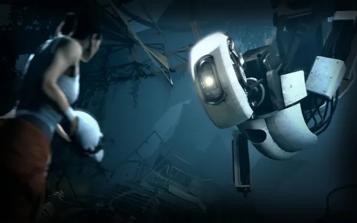

The Feeling of Being Watched: Inspired by Portal 2
Exploring how tension is built in a game while keeping a light mood for the player to
remain engaged yet stimulated.
Firstly, let me introduce the main premise of Portal 2 as it will explain how it relates to the philosophies of Freud, Lacan, Barthes, and Althusser.
The Game begins in a room that is meant to simulate a safe environment, but as a little robot begins to try to get the player to get out of there, the room begins to collapse and reveals that it is a staged environment in a testing facility.
This begins the trial that sets up the puzzle game.
As we are trying to figure out where we are in this world and how to find a way out, the small robot gives hints and helps us find a Portal gun that will help us solve the various room puzzles and move forward in the game.
Meanwhile, another robot called GLaDOS becomes our antagonist, as it seems it is who is in charge of the simulation and the human testing.

Here we have an image of the avatar for the player facing GLaDOS in a scene further into the game.
Since our player does not talk, as is common in games like this, the dialogue comes as one liners by GLaDOS and our first robot helper.
These are usually mocking or threatening in nature, but at the same time offer comedic relief for the game tension to break.
Sometimes there will be small hints on how to move forward within the line clips but they usually will just be a way to fill the space between actions.
This is my favorite example of one of these lines.
So, how does this apply to the themes that we have read during this course?.
Well, touching on Freud’s This mocking robot in an off putting environment creates a comfort in just interaction with the player.
Had the game not had an interaction like this, the puzzles would feel really long and boring and almost like a chore. This light mocking and insulting feels like a conversation with a friend.
What is interesting about this to me is how close friends are more comfortable with each other than with lighter acquaintances ,thus we celebrate the familiarity with quips and jokes that another person might take as malicious intent.
This makes it so, despite being abused by this entity, we end up liking it more for it. GLaDOS keeps the game light by adding pressure through its mockery.
Furthermore, the connection to the environment through the robot reminds me of Read Barthes' < The Reality Effect > by the concept of this being the thing that keeps the player connected to the game.
As previously stated, GLaDOS feels like a friend going through the game with us.Although it is the reason for the testing, we can be grateful for this sadistic experiment that it is making the player go through because otherwise we would not have a game to play.
Below is an example of how the game environment can be extremely grimey and grungy.
It is easy to feel out of place in a facilty so broken and ugly, but the clip will also show the easy with which GLaDOS
can provide comedic relief and make it seen like a friendly environment although what it is saying is not innately comforting.